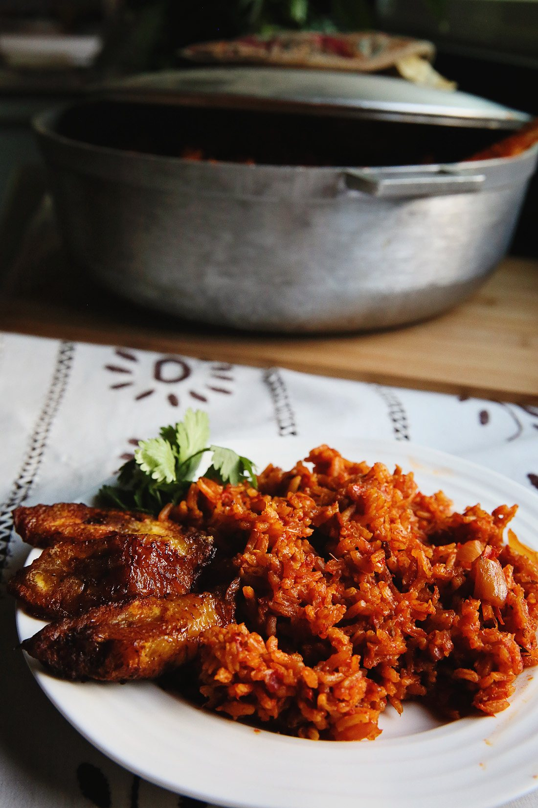

Home
Jollof

Description
Jollof rice is a beloved West African dish with many regional
variations. It's made with a unique blend of spices, long-grain rice, and a tomato and red pepper base. It is often served as a hearty entrée by adding beef, chicken, goat, or fish, or as is as a side.
Ingredients
- Perfumed Rice
- 5 cups Mahatma long grain rice
- 1 medium onion, chopped
- 3/4 cup vegetable oil
- 12 oz tomato paste
- 4 cups chicken stock
- 1 Tbsp curry powder
- 1 Tbsp Thyme
- 2 bay leaves
- 1 Tsp Salt
- 1 Tsp pepper
- For the Tomato Sauce
- 6 Roma tomatoes
- 4 red bell peppers
- 1 Scotch bonnet pepper (aka Habanero)
- 1 medium onion
- 3 garlic cloves
Steps
- Make the tomato and pepper sauce by blending all the ingredients in a blender until smooth. Set aside.
- In a large pot, preheat the cooking oil on medium heat and add the chopped onions.
Fry for 3-5 minutes until onions become soft and translucent.
- Add tomato paste and fry for 5 minutes.
- Add garlic and bay leaves and cook for an additional 2 minutes,
stirring often.
- Once the tomato paste has cooked down, add the blended tomato and pepper sauce and cook down until
the sauce has thickened and turned dark red in color. Season with Thyme, Curry powder, salt and pepper.
- Stir in the rice, making sure it is all coated with the sauce.
- Add the chicken broth and stir, allowing the
rice to come to a boil.
- Reduce heat, cover with a tight lid, and cook until the rice is done. About 30 minutes